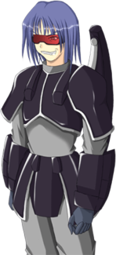

- Welcome to Touhou Wiki!
- Please register to edit. For assistance, check in with our Discord server or IRC channel.
Lagunas
| ラグナス Lagunas ɾ̠a̠ɡ̃ɯᵝna̠sɯᵝ | |
|---|---|
|
 Lagunas in Banshiryuu
| |
| Species | |
| Occupation |
Soldier |
| Location |
Seihou World (Unknown) |
Music Themes | |
| |
Appearances | |
| Official Games | |
| |
- Note: This article is part of the Seihou Project by the Doujin circle "Shunsatsu sare do?".
Lagunas (ラグナス Ragunasu) is the younger brother of Yuitia and the fifth boss and sixth midboss of Banshiryuu. He refused anyone to enter RedStorm on Mars as Yuitia was fused with a machine in RedStorm, which cause machinery to go on a rampage. He was trying to protect her, aware that Yuitia was the cause of the incident. He was worried that the heroine was going to "get rid of her" instead of leaving her in pain, so he refused anyone to go near her and he'll fight them. He has Yuuta Kirishima working for him.
General Information[edit]
Lagunas pilots the "LEGO Batter Great!!". He was described as an "hooligan" in her profile and that he "Likes various vibrations and gattai" in his. Gattai (合体) was popularised by Japanese mecha anime, meaning to merge two entities into one. Lagunas does this with Yuuta Kirishima half-way through his battle in the C74 and V3 of Banshiryuu as it vibrates. He was also descriped to have "sister complex and a shota complex", meaning he has a strong attraction towards his sister and young boys.
Character Basis[edit]
Name[edit]
The name "Lagunas" is Spanish and is from the plural of laguna (meaning 'lagoons'), which is an habitational name from any of the numerous places. It came from the Latin word lacuna, meaning "hollow" or "hole".
Design[edit]
In Banshiryuu official art, Lagunas has shoulder length blue hair and a red visor. He wears a onyx colored chestplate, gauntlets, and plateskirt with a gray bodysuit. His metal "wings" are connected to the back of his chestplate. A full in-game portrait of Lagunas can be seen in a cut-scene.
Relationships[edit]
- Yuitia
Yuitia is Lagunas's older sister. Their relationship is unclear, but Lagunas appears to be preventing anyone from going near her when she was fused with RedStorm. Once she was rescued and upon meeting Lagunas who has grown big, she became confused due to her lack of understanding of the flow of time.
- Yuuta Kirishima
Yuuta Kirishima is simply a subordinate for Lagunas, preventing the heroine from going to Mars in Banshiryuu.
- Erich
Lagunas appeared to have known Erich in the past, but this is unknown. On lunatic mode of C74 version of Banshiryuu, Erich says "Long time no see" and "You haven't changed at all..." to Lagunas. On the same mode, Yuitia says "Oh, it's old man Erich."
Official Profiles[edit]
| いろんな振動と合体が大好き。
シスコンでショタコン。 |
Likes various vibrations and gattai.
Has a sister complex and a shota complex. |
Official Sources[edit]
- 2008/08/16 Banshiryuu
| This page is part of Project Characters, a Touhou Wiki project that aims to write proper descriptions for all official characters of Touhou Project. Please keep the character page guidelines in mind when contributing. |